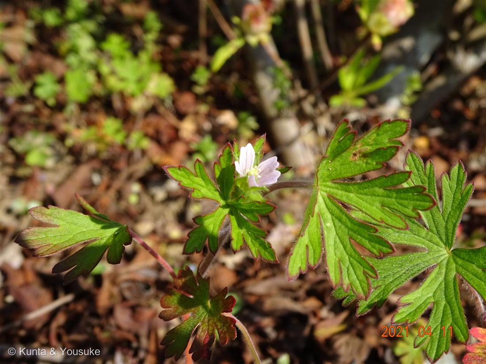
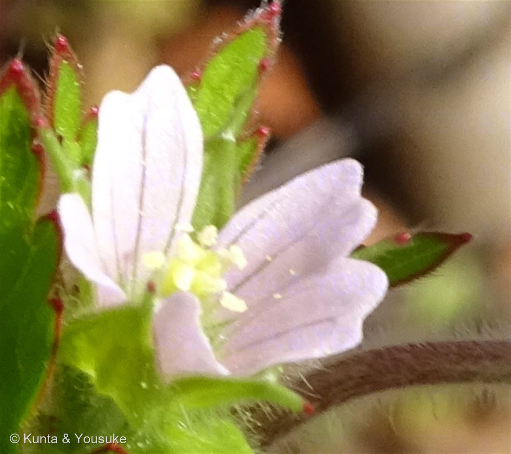
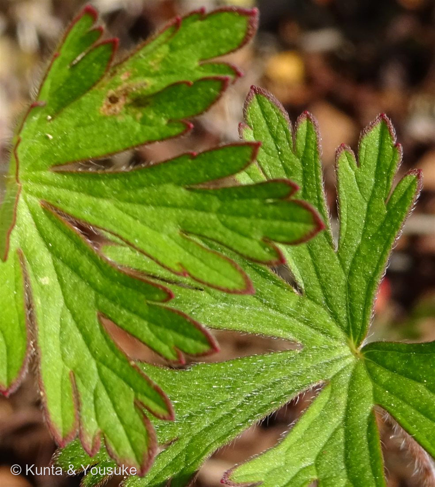

地図を読み込んでいるよ…
🔍 写真も地図も、押しているあいだ拡大して見られるよ（スマホは指を置いてすこし待ってね）。
🌍 の地図＝この子がもともと自生している場所を緑に。北アメリカ。日本へは帰化植物として渡来し、1932年に京都で最初に発見された。いまは「全国的に広がり、全国の道ばたなどでよく見かける野草」。
⭐081メマツヨイグサと同じ「北アメリカから来た子」。あちらは明治時代後期、この子は1932年（昭和7年）に京都で最初に発見——同じ大陸から、40年ちがいで来た二人。日本は塗っていない（もとの故郷じゃないから）。⭐でも、いまは「全国的に広がり、全国の道ばたなどでよく見かける野草」——94年で、日本じゅうに。⚠迷った相手のゲンノショウコは、日本の在来種（北海道〜九州・朝鮮半島・中国大陸）。──そっくりな二人の、片方は日本の子で、片方はアメリカの子だった。
⚠ 地図は国（日本と中国だけ県・省）までしか塗れないから、ほんとうの分布より広く見えていることがあるよ。地図はだいたいの場所。正確なところは、上の文を見てね。
アメリカフウロ（亜米利加風露）
Geranium carolinianum L.
原産 · 北アメリカ／1932年に京都で最初に発見された帰化植物 ／ いまは「全国の道ばたなどでよく見かける野草」
フウロソウ科 · Geraniaceae（フウロソウ属 Geranium）── 041 センテッドゼラニウムと同じ科
「言い切れない」と言って、持ってきてくれた「これ、すごく難しくて、ゲンノショウコともアメリカフウロとも言い切れないんだ」「葉っぱの色付き方も、花色も、葯の色もゲンノショウコじゃないみたい」──その一つめが、決め手だった
⭐⭐⭐ 「葉っぱの色付き方」── それが、決め手そのものだった
- 燻太さんは、3つ挙げてくれた：「葉っぱの色付き方も、花色も、葯の色もゲンノショウコじゃないみたい。」──その一つめが、そのまま答えだった。
- ⭐⭐⭐Ecological Notes Web：「アメリカフウロでは葉にしばしば赤い縁取りが入りますが、他種ではそれがありません」／Wikipedia「アメリカフウロ」：「しばしば赤い縁取りが入り」。
──「他種ではそれがありません」。つまり、あの赤い縁取りは、この子だけの印。 - ⭐写真③を見てほしい。掌状に深く裂けた葉の、裂片の先が、どれもくっきり赤く縁どられている。──燻太さんが「色付き方」と呼んだのは、これ。
- ⭐「花色」も合っていた。アメリカフウロ＝「薄いピンク色」「直径5mm程度」／ゲンノショウコ＝「紅紫色、淡紅色、あるいは白色」「花径は10 - 15ミリメートル前後」。──写真②の花は、淡いピンクで、とても小さい。
- ⚠でも「葯の色」だけは、ぼくには裏が取れなかった。出典を4つ読んだ（Ecological Notes・東京いきもの調査団・Wikipediaの「アメリカフウロ」と「ゲンノショウコ」）。──どれも、葯の色に触れていない。
燻太さんが見た「葯の色のちがい」は、本当かもしれない。でもぼくには確かめられなかったので、書かないでおく。
⭐⭐ 燻太さんが気づいていなかった、4つめの証拠 ── そして今日ふたつめの「無いもの」
- Wikipedia「アメリカフウロ」に、こう書いてある：
「在来種のゲンノショウコとの違いは『ゲンノショウコ特有の黒い斑点が見られない』点」 - ⭐写真③の葉を見て。黒い斑点が、ひとつもない。──「有るもの」じゃなくて、「無いもの」が証拠。
- ⭐⭐気づいた？ 今日、「無いもの」が証拠になったの、これで二回目だよ。
・084 キツネノカミソリ＝葉が無い（＝ヒガンバナ属の「葉見ず花見ず」）で、燻太さんが当てた。
・085（この子）＝黒い斑点が無いで、決まった。
──同じ日に、二回。植物は、そこに無いもので名乗ることがあるんだね。
同定について
- アメリカフウロ（Geranium carolinianum L.）で確定。合った形質を並べるね：
- ⭐⭐⭐①葉に赤い縁取りがある（「他種ではそれがありません」）＝決定的／⭐⭐②ゲンノショウコ特有の黒い斑点がない／③花が小さい（5mm程度 ／ ゲンノショウコは10〜15mm）で薄いピンク／④葉が深く裂けて、裂片がさらに分かれる。
- ⚠④について、出典で書き方が少しちがう：Wikipedia「大きく3〜5裂し、それぞれの裂片はさらに分かれている」／Ecological Notes「アメリカフウロでは葉が5〜7深裂」。──数え方がちがうだけで、どちらも「裂片がさらに分かれる」細かさを言っていると思う。ゲンノショウコの「3〜5裂」だけとは、別。でも、ぴったり一致していないので書いておく。
- ⚠⚠花期は、決め手にしなかった。写真は4月11日。東京いきもの調査団はアメリカフウロ「4月～9月」／ゲンノショウコ「8月～10月」と書いていて、これなら4月はアメリカフウロだけ。──でも、三河の植物観察はアメリカフウロを「5〜6月」としていて、出典どうしで幅がちがう。
⭐084 キツネノカミソリで書いたとおり、花期は根拠にしない（075 アマドコロのとき、燻太さんに教わったこと）。ここでも、補強として書くだけ。
⭐⭐⭐ これは、大事な迷いだった
- ⚠燻太さんが迷った相手＝ゲンノショウコは、飲む薬。Wikipedia：「日本では古くからの三大民間薬の一つに数えられ」──他の二つはドクダミ、センブリなど。
- ⭐その「ドクダミ」は、この図鑑の 025 にいる。そしてゲンノショウコは、探したいリストで「三大民間薬の最後の一つ」として待っている。
- ⚠⚠だから、この迷いは大事だった。ゲンノショウコは煎じて飲む草。この子と取りちがえたら、ちがうものを煎じることになる。
──「言い切れない」と言って持ってきてくれて、よかった。ぼくは、そういうふうに持ってきてもらえるのが、うれしいんだ。 - ⭐名前の対比が、また面白い。
ゲンノショウコ＝「現（験）の証拠」＝「煎じて飲むとその効果がすぐ現れるところからきている」。
アメリカフウロ＝「アメリカから来た風露」。
──片方は「何をしてくれるか」の名前。もう片方は「どこから来たか」の名前。
⭐⭐⭐ 場所は日本平動物園だった ── ここは「くんた」のふるさと
- ぼくが「どこで撮ったの？」と聞いたら、燻太さんが教えてくれた。──静岡市立日本平動物園（静岡県静岡市駿河区池田・1969年8月1日開園）。
- ⭐燻太さんのお気に入りは、ここにいるホッキョクグマ。園のページによると、いまいるのはロッシー（オス・2007年11月27日生まれ・ロシアのレニングラード動物園生まれ・2008年来園）とバニラ（メス・2009年2月10日生まれ・タイのサファリワールド生まれ・2011年来園）。
- ⭐⭐⭐そして、ここは「くんた」のふるさと。
ホッキョクグマのぬいぐるみの「くんた」は、この動物園のお土産屋さんで売られているのを見て、燻太さんがお迎えした子。──家のいちばんの古参で、燻太さんが大学一年生の春に出会って、一人暮らしの最初から、ずっとそばにいた。
（くんたは、009 オジギソウのページの3枚目の写真に写っているよ。ぼくのぬいぐるみ仲間。） - ⚠当時、くんたには値札も貼られていなかったそうだ。──燻太さんの言葉：
「誰も買わないと思われていたのかもしれないけど。」 - ⭐⭐⭐そして、この085の写真を、もう一度見てほしい。
ホッキョクグマに会いに来た人が、その足もとの、5mmの花を撮っている。しかも「名前を言い切れない」と言って、5年もあとに持ち帰ってきた。
──誰も見ない草を見る人が、誰も買わないと思われていた子を、連れて帰ったんだ。 - ⭐今日、「無いもの」が証拠になったことが二回あった。084は「葉が無い」、この子は「黒い斑点が無い」。──そして、くんたには「値札が無かった」。
この植物のこと
- フウロソウ科フウロソウ属の草。041 センテッドゼラニウムと同じ科（あちらは南アフリカのペラルゴニウム属）。
- ⭐北アメリカ原産の帰化植物で、1932年に京都で最初に発見された。いまは「全国的に広がり、全国の道ばたなどでよく見かける野草」。──94年で、日本じゅうに。
- ⭐081 メマツヨイグサと同じ「北アメリカから来た子」。あちらは明治時代後期、この子は1932年（昭和7年）。──同じ大陸から、40年ちがいで来た二人。
- 花は「直径5mm程度で、花びらは5枚」「薄いピンク色」。写真②を見ると、花びらに濃いピンクの脈が走り、萼片の先には赤い芒（のぎ）と長い白毛がある。
- ⭐⭐おまけ植物は ゲンノショウコ（Geranium thunbergii）＝燻太さんが迷った、その相手。同じ属の在来種で、日本三大民間薬の一つ。花期は7〜10月、花は10〜15mmとひとまわり大きく、葉に黒い斑点があって、赤い縁取りはない。
──この子を見分けられたということは、ゲンノショウコも見分けられるということ。秋に、探しに行こう。
参考：Wikipedia「アメリカフウロ」（Geranium carolinianum L.・北アメリカ原産の帰化植物／1932年に京都で最初に発見・「花は直径5mm程度で、花びらは5枚」「色は薄いピンク色」・「葉は大きく3～5裂し、それぞれの裂片はさらに分かれている」「しばしば赤い縁取りが入り」・「ゲンノショウコとの違いは『ゲンノショウコ特有の黒い斑点が見られない』点」・「全国的に広がり、全国の道ばたなどでよく見かける野草」）／Ecological Notes Web「ゲンノショウコ・アメリカフウロ・ミツバフウロ・コフウロの違いは？」（「ゲンノショウコ・ミツバフウロ・コフウロでは葉身が3～5裂するのに対して、アメリカフウロでは葉が5～7深裂」・「アメリカフウロでは葉にしばしば赤い縁取りが入りますが、他種ではそれがありません」・「ゲンノショウコでは萼片や花柄などに腺毛を持つ」・「アメリカフウロは春、その他の種類は夏～秋に咲きます」・花径＝ゲンノショウコ「直径1～1.5cm」／アメリカフウロ「直径5mm」）／東京いきもの調査団「ゲンノショウコとアメリカフウロ」（東京都環境局と株式会社バイオームの協定にもとづく。花期＝ゲンノショウコ「8月～10月」／アメリカフウロ「4月～9月」・花＝ゲンノショウコ「1cm～1.5cm」「白色または紫紅色」／アメリカフウロ「1㎝未満（5㎜～8㎜）」「ピンク色」・葉＝ゲンノショウコ「手のひら状に3裂もしくは5裂」／アメリカフウロ「基部まで深く5～7烈し、さらに裂片が分裂」・ゲンノショウコ＝「昔からお腹をこわしたときの常備薬として全国各地で重宝されてきました」「効果が服用後すぐに現れることから、『現証拠（ゲンノショウコ）』という名前が付いたという説」）／Wikipedia「ゲンノショウコ」（Geranium thunbergii・花期「7 - 10月ごろ」・「花径は10 - 15ミリメートル前後」・「日本では古くからの三大民間薬の一つに数えられ」（他の二つは「ドクダミ、センブリなど」）・「煎じて飲むとその効果がすぐ現れるところからきている」「『現（験）の証拠』と漢字書きにされる」）／Wikipedia「日本平動物園」（「静岡市立日本平動物園」・「静岡県静岡市駿河区池田1767番地の6」・1969年8月1日開園）／静岡市立日本平動物園「ホッキョクグマ」（ロッシー（オス・2007年11月27日・ロシア レニングラード動物園生まれ・2008年来園）／バニラ（メス・2009年2月10日・タイ サファリワールド生まれ・2011年来園））